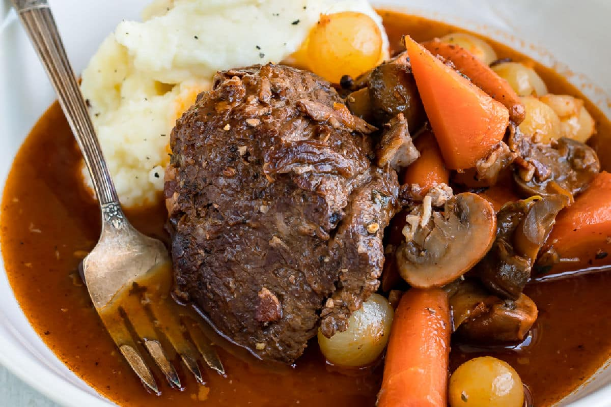

Home
Places To Go
Things To Do
Food To Try
Plan Your Trip
Home
Places To Go
Things To Do
Food To Try
Plan Your Trip
 |
Lyon, known as the gastronomic capital of France, offers a warm welcome with its traditional French Onion Soup. Served with a crusty baguette and melted Gruyère cheese, this hearty broth, caramelized onions, and flavorful broth combination is a comforting culinary experience. Head to a bouchon, the quintessential Lyonnais restaurant, for an authentic taste of this classic dish. |
 |
 |
Provence introduces you to the vibrant colors and flavors of Ratatouille, a vegetable medley that's a feast for the eyes and the taste buds. With ingredients like eggplant, zucchini, bell peppers, and tomatoes stewed to perfection, this Provençal dish reflects the region's commitment to fresh, seasonal produce. Enjoy it as a main course or a side dish, paired with a crusty baguette. |
 |
 |
Normandy, famous for its cheese, offers a delightful rendezvous of flavors. Explore local markets to assemble a cheese platter featuring Camembert, Livarot, and Pont-l'Évêque. Pair these cheeses with a variety of crusty bread, and enhance the experience with a bottle of exquisite French wine. The region is known for its apple-based beverages, but you can also find excellent French wines to complement the rich cheeses. |
 |
|  | Burgundy introduces you to the culinary masterpiece of Boeuf Bourguignon. Slow-cooked beef, marinated in red wine, mushrooms, and aromatic herbs, results in a tender and flavorful dish that epitomizes Burgundian cuisine. Served alongside creamy mashed potatoes or buttered noodles, this classic exemplifies the region's dedication to rich, hearty flavors. |
| No culinary journey in France is complete without savoring the iconic Croissant. Head to a quaint Parisian boulangerie for a flaky, buttery croissant that practically melts in your mouth. Whether enjoyed plain or filled with chocolate or almond paste, this delectable pastry is a breakfast staple that embodies the artistry of French baking. |
Click on the other subheadings for more sections. 
Created by Ambrey.m_s_thant.
Thanks for stopping by! We appreciate your visit.
© Copyright.2023 ALL RIGHTS RESERVED